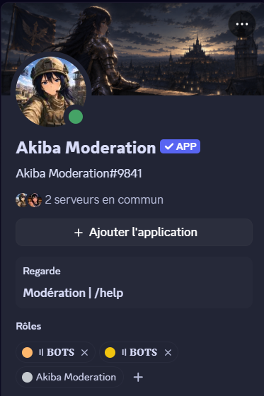

Projet entièrement personnel, mené seul et en autonomie totale sur environ un mois : aucun sujet imposé, aucun encadrant, aucune échéance autre que celle que je me suis fixée. Le besoin était concret : modérer efficacement un serveur Discord sans devoir rester connecté en permanence.
Rien de ce projet ne figurait au programme du BUT : ni JavaScript, ni Node.js, ni la consommation d'une API externe. Tout vient de la documentation officielle et de mes essais. C'est, à ce titre, le projet qui démontre le mieux ma capacité à apprendre seul une technologie inconnue.
Livrer un outil réellement utilisé au quotidien, pas une démonstration : un bot capable de gérer seul la modération d'un serveur actif. L'objectif portait donc entièrement sur le fonctionnel et la fiabilité : il n'y a pas d'interface graphique, l'« interface » du bot étant ses commandes et ses messages.
Objectif secondaire, tout aussi important pour moi : comprendre en profondeur le fonctionnement d'une API REST, de l'architecture événementielle et de la programmation asynchrone en JavaScript, des notions que je ne voulais pas seulement avoir lues.

Le bot est développé en JavaScript avec Node.js et la bibliothèque discord.js. Il repose sur une architecture événementielle (gestion des events) et des commandes slash. J'ai implémenté un module de modération complet : bannissement, expulsion, mute temporaire, avertissements (warns) et gestion des rôles. Un système d'auto-modération filtre le spam, les liens indésirables et les mots interdits. Toutes les actions sont enregistrées dans un salon de logs, et les données (warns, configuration du serveur) sont stockées de manière persistante.
Les principaux défis ont été la gestion de l'asynchrone (async/await, promesses) pour enchaîner les appels à l'API sans bloquer le bot, le respect des limites de requêtes (rate limits) de Discord, et la gestion fine des permissions pour éviter tout abus. J'ai aussi dû structurer le code proprement en modules afin qu'il reste maintenable au fur et à mesure de l'ajout de nouvelles commandes.
Ce projet m'a appris à consommer une véritable API REST, à raisonner en programmation événementielle et asynchrone, et à organiser un projet JavaScript de A à Z. Au-delà de la technique, j'ai compris l'importance de la gestion des erreurs et des permissions dans un outil utilisé par de vraies personnes. C'est ce projet qui m'a donné le goût du développement back-end.
async/await, promesses) et de l'architecture événementielle.